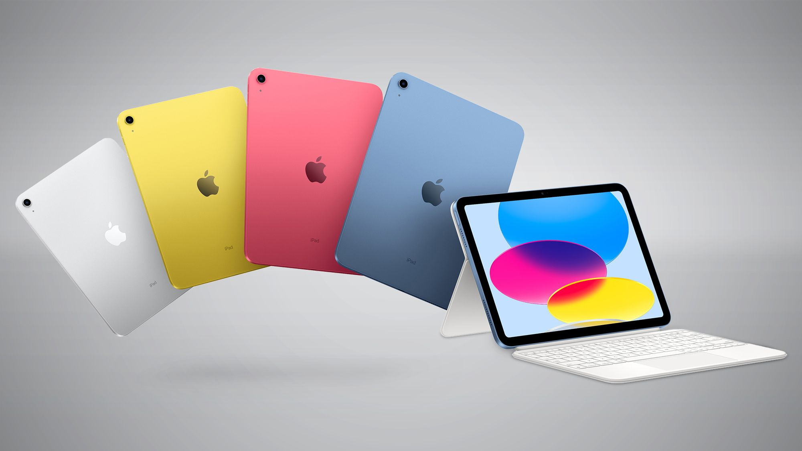
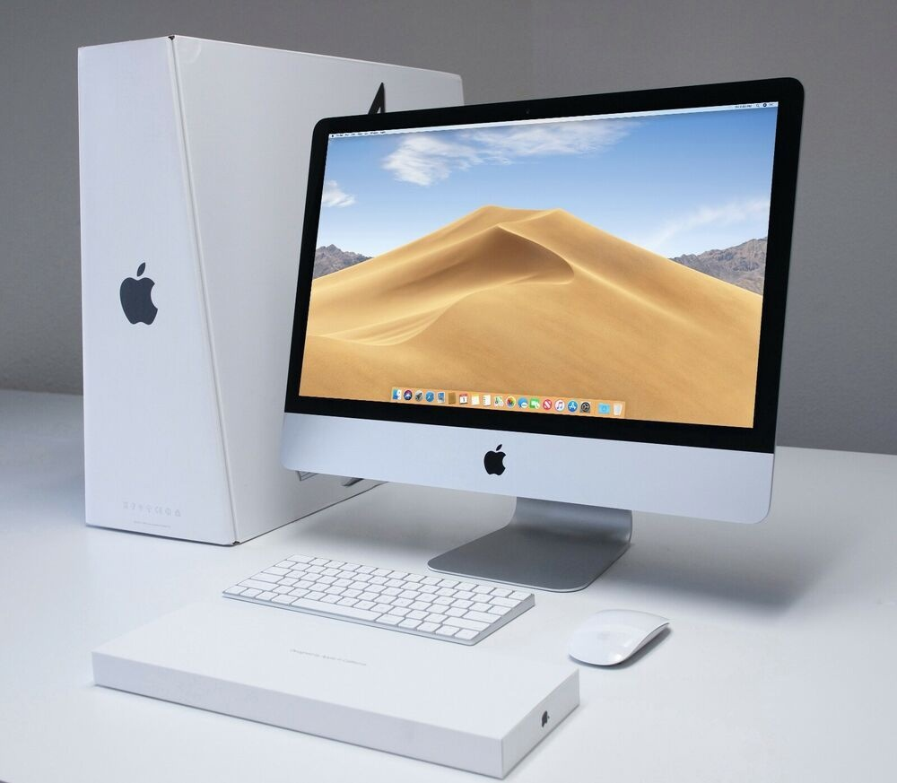

Техника Apple

Apple Inc. предлагает широкий ассортимент инновационных и высококачественных продуктов, разработанных для улучшения жизни пользователей. От смартфонов до компьютеров, от носимых устройств до сервисов, линейка продуктов Apple удовлетворяет различные потребности и предпочтения.
iPhone - флагманский продукт Apple, известный своим стильным дизайном, мощной производительностью и передовыми функциями. С каждым новым поколением Apple продолжает расширять границы мобильной технологии.
iPad объединяет мощность и универсальность компьютера с простотой использования и портативностью планшета. Будь то работа, творчество или развлечения, iPad предлагает ряд моделей, подходящих для различных потребностей.
Линейка Mac включает настольные и ноутбуковые компьютеры, предназначенные как для профессионалов, так и для потребителей. С ведущей в отрасли производительностью, потрясающими дисплеями и интуитивным программным обеспечением, Mac позволяет пользователям делать свою лучшую работу.
Apple Watch - мощное носимое устройство, которое помогает пользователям оставаться на связи, активными и здоровыми. С функциями отслеживания фитнеса, мониторинга сердечного ритма и мобильной связи, Apple Watch - это не просто временный механизм.